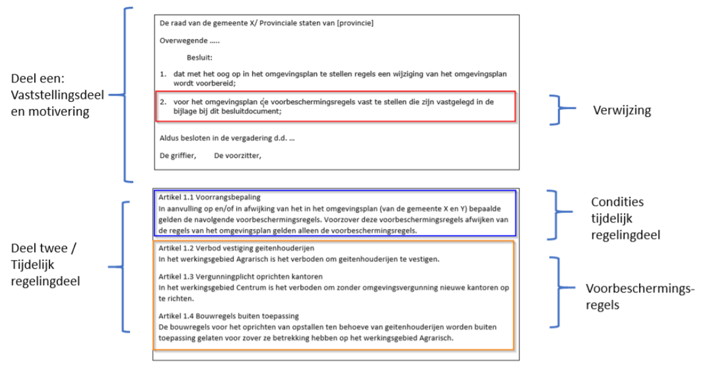

Tijdelijk regelingdeel
Er is een aantal scenario's waarin het ene bevoegd gezag gerechtigd is om (via besluiten) een regeling van een ander bevoegd gezag aan te passen, rechtstreeks of door aanpassing van een besluit. Dit wordt meervoudig bronhouderschap genoemd. Dit speelt bijvoorbeeld vanwege de Omgevingswet bij:
Voorbeschermingsregels
Reactieve interventie
Projectbesluit
Daarnaast zijn er situaties waarin een bevoegd gezag als onderdeel van een eigen regeling tijdelijke regels stelt die na verloop van tijd komen te vervallen of die uiteindelijk in de regeling verwerkt zullen worden. In sommige gevallen hebben de tijdelijke regels een dusdanige structuur dat het lastig is om de regels (meteen) in de bestaande regeling op te nemen. Dit speelt bijvoorbeeld bij:
Overgangsrecht waarbij een regeling ingrijpend wijzigt
Voorbeschermingsregels
Bij gemeentelijke herindelingen: (delen van) een regeling van een andere gemeente die is opgegaan in een nieuwe of al bestaande gemeente.
Voor deze situaties is in STOP een oplossing gekozen waarbij de regeling technisch uit verschillende onderdelen bestaat maar juridisch één geheel vormt. De regeling bestaat dan uit een hoofdregeling die volgens een van de gebruikelijke modellen is opgebouwd, en een aanvulling waarvan de tekst als Tijdelijk Regelingdeel is vormgegeven. Een tijdelijk regelingdeel kent zijn eigen structuur: het lichaam van een tijdelijk regeling begint altijd met een beschrijving in tekst van de condities waaronder het regelingdeel geldig is. Daarin staat ook in woorden aangegeven dat het juridisch hoort bij de hoofdregeling, en dat (bijvoorbeeld bij een voorbereidingsbesluit of reactieve interventie) de regels in het tijdelijk deel boven die in de hoofdregeling gaan.
Technisch is het tijdelijk regelingdeel een apart Work met een eigen identificatie. Het tijdelijke regelingdeel wijst altijd naar zijn hoofdregeling; deze verwijzing is onderdeel van de identificatie-STOP-module. Afgezien van het tekstmodel ziet een tijdelijk regelingdeel er hetzelfde uit als een gewone regeling: het wordt zelfstandig geconsolideerd, en alle STOP-modules die bij een gewone regeling toegestaan zijn, zijn ook bij een tijdelijk regelingdeel toegestaan.
Voorbeeld: voorbeschermingsregels
Een Bevoegd Gezag kan een voorbereidingsbesluit nemen met het oog op de voorbereiding van omgevingsplan, omgevingsverordening, projectbesluit, instructieregel of instructie. Het voorbereidingsbesluit wijzigt het omgevingsplan respectievelijk de omgevingsverordening met voorbeschermingsregels. Het doel van voorbeschermingsregels is te voorkomen dat een locatie minder geschikt wordt voor de verwezenlijking van het doel van de regels. Voorbeschermingsregels kunnen nieuwe regels (of delen daarvan) toevoegen of bestaande regels buiten toepassing verklaren. Voorbeschermingsregels vervallen door òf tijdsverloop òf doordat het besluit waarop het voorbereidingsbesluit was gericht in werking is getreden of vernietigd is.
De figuur hierboven toont het voorbereidingsbesluit dat uit twee onderdelen bestaat:
Deel één, met een verwijzing naar deel twee, het tijdelijk regelingdeel, waarin de voorbeschermingsregels staan.
Deel twee, met de conditie van het tijdelijk regelingdeel en met de voorbeschermingsregels. De conditie is een beschrijving in woorden van de verhouding tussen dit tijdelijk regelingdeel en de hoofdregeling, en heeft altijd de vorm van een artikel met het nummer 1.1.